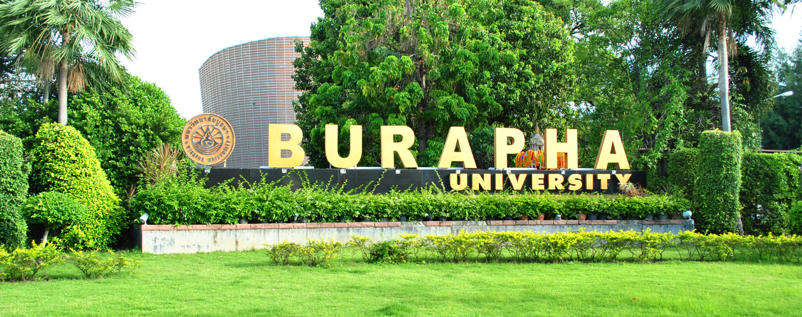

มหาวิทยาลัยบูรพา
มหาวิทยาลัยบูรพาถือกำเนิดมาจากวิทยาลัยวิชาการศึกษา บางแสน ซึ่งสถาปนา ขึ้นเมื่อวันที่ 8 กรกฎาคม พ.ศ. 2498 นับเป็นสถาบันอุดมศึกษาแห่งแรกที่ตั้งอยู่ใน ส่วนภูมิภาคของประเทศ ต่อมาได้รับ การยกฐานะเป็นมหาวิทยาลัยศรีนครินทรวิโรฒ วิทยาเขตบางแสน ในปี พ.ศ. 2517 ปัจจุบันได้รับการยกฐานะเป็นมหาวิทยาลัยบูรพา ตามพระราชบัญญัติมหาวิทยาลัยบูรพา ตั้งแต่วันที่ 30 กรกฎาคม 2533